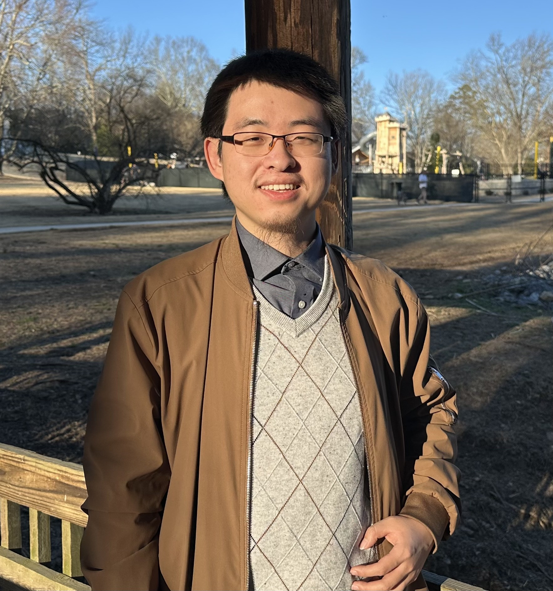

Ph.D. Candidate in Mathematics
Georgia State University
Welcome to my homepage! I am an Assistant Professor in the Department of Computer Science at the University of Academic Research. My research broadly focuses on **Machine Learning**, **Human-AI Interaction**, and **Computational Social Science**.
Prior to joining the faculty, I completed my Ph.D. at Tech University under the supervision of Prof. Alex Smith. I am always open to collaborations—feel free to reach out via email!